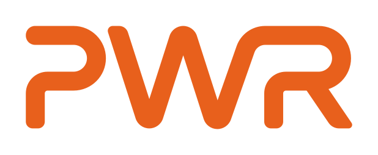
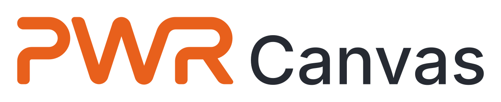
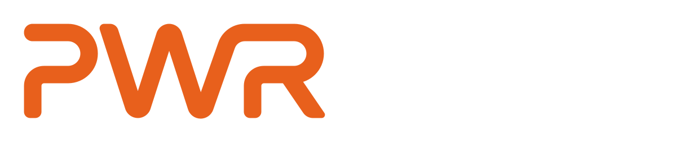
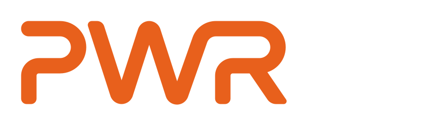
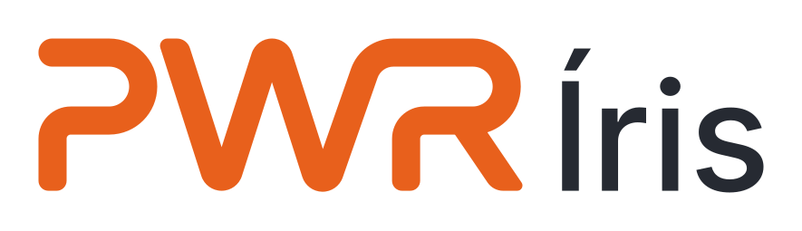

BI embeddedSeu BI.
Seu BI.
Sua marca.
Um portal próprio para entregar análises aos seus clientes.

POWER DATA / TECNOLOGIA PARA NEGÓCIOS
Dados e produtos digitais que conectam o que sua empresa precisa vender, analisar e operar.
BI EMBEDDED
Entregue dashboards dentro de um portal com a identidade da sua empresa e acesso organizado por cliente.
O que sua empresa pode contratar
Produtos prontos para começar. Desenvolvimento para o que precisa ser seu.
Um portal próprio para entregar análises aos seus clientes.
Catálogo, compra e gestão pensados na mesma entrega.
Indicadores e visualizações para entender o seu negócio.
Produtos Power Data
Ferramentas que já nascem conectadas. E um time para colocá-las no contexto da sua empresa.


Dashboards, narrativa e IA generativa em uma plataforma. Converse em português, explore os gráficos e compartilhe.

Modelos, agentes, usuários, custos e acessos em um só lugar, com a IA rodando no seu ambiente.
O Canvas transforma a conversa em análise. A Íris organiza a inteligência por trás e também funciona de forma independente.
Veja o PWR Canvas em ação
Explore uma área e veja a pergunta se transformar em contexto, indicadores e gráficos.
Como está a produção este mês?
Estamos 8% abaixo da meta. A planta 2 concentra a queda.
Paradas na linha 3, entre os dias 9 e 14, explicam a maior parte da diferença.
Exemplo interativo do produto. Sem consulta a dados reais.
Inteligência com limites claros
A Íris pode operar no seu servidor ou na sua nuvem. Você define quem acessa, quais modelos entram e como a informação é usada.
ERP, bancos de dados, Power BI e documentos.
SAP, Protheus, Omie e outras fontes
Canvas, chat da empresa e sistemas conectados por API ou MCP.
Modelo externo, só com a sua autorização.
O uso de cada integração é definido no contexto do projeto.


Consultoria Power Data
Um time para desenhar, construir e sustentar as conexões entre dados, produtos e operação.
Do ERP, das planilhas e das APIs a uma base organizada, testada e documentada.
Airflow · BigQuery · SQL Server · Oracle · dbtConhecer esta soluçãoPainéis, migrações e portais para entregar informação a equipes, clientes e parceiros.
Power BI · Embedded · Entra ID · EChartsConhecer esta soluçãoAssistentes e agentes com os seus dados, regras de acesso e custos sob controle.
Conhecer esta soluçãoERP, CRM, loja e APIs conectados para a informação seguir sem tarefas repetidas.
Conhecer esta soluçãoSites, portais, e-commerce e aplicações com experiência e regras próprias.
Conhecer esta soluçãoAmbientes, acessos, CI/CD e publicação pensados como parte da entrega.
Conhecer esta soluçãoComo a ideia ganha forma
Por que a Power Data
Da primeira conversa à próxima versão. Com as partes trabalhando juntas.
A sua próxima criação
Conte sua ideia. Vamos encontrar o caminho para criar, conectar ou transformar.
Sim. O trabalho pode começar por um produto, uma integração, dados ou pelo ambiente.
A consultoria ajuda a definir o que criar, para quem e por onde começar.
A proposta define as entregas, as conexões e como vamos acompanhar a evolução.
Você pode preparar seu contato pelo formulário enquanto conectamos este canal.
Conte seu projetoOuvir esta página
O trecho lido fica destacado.
Tema
Tamanho do texto
Controles com rótulos para leitores de tela.